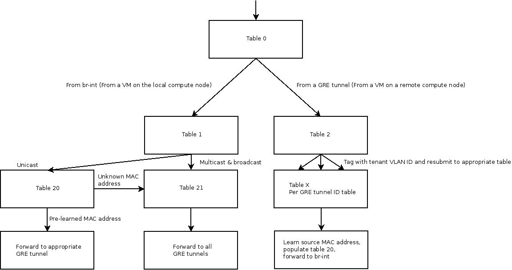

neutron-plugin-openvswitch-agent启动时的ovs命令调用
Table of Contents
1 neutron-plugin-openvswitch-agent初始化执行的ovs命令调用
ovs-agent日志位置 /var/log/neutron/openvswitch-agent.log,确保neutron debug=True
ovs命令通过/usr/bin/neutron-rootwrap来执行。
sudo /usr/bin/neutron-rootwrap /etc/neutron/rootwrap.conf ovs-cmd...
neutron-rootwrap内容
#!/usr/bin/python # PBR Generated from 'console_scripts' import sys from neutron.openstack.common.rootwrap.cmd import main if __name__ == "__main__": sys.exit(main())
neutron-plugins-openvswitch-agent初始化执行的主要command
#获取br-int mac ip -o link show br-int #br-int上如果存在patch port，删除 ovs-vsctl --timeout=2 -- --if-exists del-port br-int patch-tun #清除br-int上的flows，添加正常转发的初始策略 ovs-ofctl del-flows br-int ovs-ofctl add-flow br-int hard_timeout=0,idle_timeout=0,priority=1,actions=normal #如果enable tunnel,建立br-tun ovs-vsctl --timeout=2 -- --if-exists del-br br-tun ovs-vsctl --timeout=2 add-br br-tun #br-int上添加patch-tun ovs-vsctl --timeout=2 add-port br-int patch-tun ovs-vsctl --timeout=2 set Interface patch-tun type=patch ovs-vsctl --timeout=2 set Interface patch-tun options:peer=patch-int #验证patch-tun成功添加 ovs-vsctl --timeout=2 get Interface patch-tun ofport #br-tun上添加patch-int并验证 ovs-vsctl --timeout=2 add-port br-tun patch-int ovs-vsctl --timeout=2 set Interface patch-int type=patch ovs-vsctl --timeout=2 set Interface patch-int options:peer=patch-tun ovs-vsctl --timeout=2 get Interface patch-int ofport #清除br-tun的flows ovs-ofctl del-flows br-tun #初始策略，in_port=1为patch-int,上步获取到的ofport，此处为all-in-one模式 ovs-ofctl add-flow br-tun hard_timeout=0,idle_timeout=0,priority=1,in_port=1,actions=resubmit(,1) ovs-ofctl add-flow br-tun hard_timeout=0,idle_timeout=0,priority=0,actions=drop #所有单播发到table20 ovs-ofctl add-flow br-tun hard_timeout=0,idle_timeout=0,priority=0,table=1,dl_dst=00:00:00:00:00:00/01:00:00:00:00:00,actions=resubmit(,20) #所有多播(包括广播)发到table21 ovs-ofctl add-flow br-tun hard_timeout=0,idle_timeout=0,priority=0,table=1,dl_dst=01:00:00:00:00:00/01:00:00:00:00:00,actions=resubmit(,21) ovs-ofctl add-flow br-tun hard_timeout=0,idle_timeout=0,priority=0,table=2,actions=drop ovs-ofctl add-flow br-tun hard_timeout=0,idle_timeout=0,priority=0,table=3,actions=drop ovs-ofctl add-flow br-tun hard_timeout=0,idle_timeout=0,priority=1,table=10,actions=learn(table=20,priority=1,hard_timeout=300,NXM_OF_VLAN_TCI[0..11],NXM_OF_ETH_DST[]=NXM_OF_ETH_SRC[],load:0->NXM_OF_VLAN_TCI[],load:NXM_NX_TUN_ID[]->NXM_NX_TUN_ID[],output:NXM_OF_IN_PORT[]),output:1 ovs-ofctl add-flow br-tun hard_timeout=0,idle_timeout=0,priority=0,table=20,actions=resubmit(,21) ovs-ofctl add-flow br-tun hard_timeout=0,idle_timeout=0,priority=0,table=21,actions=drop
用到了多个table，constants.py 中定义了不同table的用途
PATCH_LV_TO_TUN = 1 GRE_TUN_TO_LV = 2 VXLAN_TUN_TO_LV = 3 LEARN_FROM_TUN = 10 UCAST_TO_TUN = 20 FLOOD_TO_TUN = 21
确认网桥创建完毕，初始化完毕
ovs-vsctl --timeout=2 list-br br-ex\nbr-int\nbr-tun\n ovs-vsctl --timeout=2 br-get-external-id br-ex bridge-id Agent initialized successfully, now running...
2 br-int和br-tun
前面是一个all-in-one模式下，ovs agent启动执行的一些命令。下面针对一个多节点环境 分析GRE通道的工作模式。
一个controller(192.168.1.100),同时也装了nova-compute,也相当与一个计算节点。 两个计算节点，node1(192.168.1.101),node2(192.168.1.102)
GRE的作用是联系租户网络中属于不同计算节点的虚拟机。VLAN用于隔离租户间的网络。
当l2-agent(ovs-agent)启动时会通过openstack的消息队列通知controller自己的启动， 然后会在controller与自己间建立GRE,接着controller通知其它节点有新节点加入,新节点 会与每个存在的节点建立GRE通道，一个完整的网络就在控制节点和所有计算节点间形成了。GRE 头中的tunnel ID域用来区分不同的租户网络。GRE通道通过对VM数据包的封装为每个租户创建 了一个跨越所有计算节点的广播域。
VM通过tap设备连到br-int,br-int和br-tun通过patch port连接，patch port类似于 veth对。关于veth对：A Linux networking device pair where if a packet is sent down one end it will magically appear at the other end. 虽然用ip address或ifconfig看不到patch port,但br-int和br-tun会把它当成正常的 交换机port。
br-int,works as a normal layer 2 learning switch.只有一条正常转发的flow。
root@Fang:~# ovs-ofctl dump-flows br-int NXST_FLOW reply (xid=0x4): cookie=0x0, duration=12777.491s, table=0, n_packets=425, n_bytes=32702, idle_age=6, priority=1 actions=NORMAL
controller(192.168.1.100)上br-tun
ovs-vsctl show
911ff1ca-590a-4efd-a066-568fbac8c6fb
[... Bridge br-int omitted ...]
Bridge br-tun
Port patch-int
Interface patch-int
type: patch
options: {peer=patch-tun}
Port br-tun
Interface br-tun
type: internal
Port "gre-2"
Interface "gre-2"
type: gre
options: {in_key=flow, local_ip="192.168.1.100", out_key=flow, remote_ip="192.168.1.101"}
Port "gre-1"
Interface "gre-1"
type: gre
options: {in_key=flow, local_ip="192.168.1.100", out_key=flow, remote_ip="192.168.1.102"}
除了连接br-in的patch-in,还有两条GRE通道，分别用来连通两台计算节点。
2.1 跨compute node的VM通信
一台计算节点br-tun的初始策略
[root@NextGen1 ~]# ovs-ofctl dump-flows br-tun NXST_FLOW reply (xid=0x4): cookie=0x0, duration=182369.287s, table=0, n_packets=5996, n_bytes=1481720, idle_age=52, hard_age=65534, priority=1,in_port=3 actions=resubmit(,2) cookie=0x0, duration=182374.574s, table=0, n_packets=14172, n_bytes=3908726, idle_age=5, hard_age=65534, priority=1,in_port=1 actions=resubmit(,1) cookie=0x0, duration=182370.094s, table=0, n_packets=0, n_bytes=0, idle_age=65534, hard_age=65534, priority=1,in_port=2 actions=resubmit(,2) cookie=0x0, duration=182374.078s, table=0, n_packets=3, n_bytes=230, idle_age=65534, hard_age=65534, priority=0 actions=drop cookie=0x0, duration=182373.435s, table=1, n_packets=3917, n_bytes=797884, idle_age=52, hard_age=65534, priority=0,dl_dst=00:00:00:00:00:00/01:00:00:00:00:00 actions=resubmit(,20) cookie=0x0, duration=182372.888s, table=1, n_packets=10255, n_bytes=3110842, idle_age=5, hard_age=65534, priority=0,dl_dst=01:00:00:00:00:00/01:00:00:00:00:00 actions=resubmit(,21) cookie=0x0, duration=182103.664s, table=2, n_packets=5982, n_bytes=1479916, idle_age=52, hard_age=65534, priority=1,tun_id=0x1388 actions=mod_vlan_vid:1,resubmit(,10) cookie=0x0, duration=182372.476s, table=2, n_packets=14, n_bytes=1804, idle_age=65534, hard_age=65534, priority=0 actions=drop cookie=0x0, duration=182372.099s, table=3, n_packets=0, n_bytes=0, idle_age=65534, hard_age=65534, priority=0 actions=drop cookie=0x0, duration=182371.777s, table=10, n_packets=5982, n_bytes=1479916, idle_age=52, hard_age=65534, priority=1 actions=learn(table=20,hard_timeout=300,priority=1,NXM_OF_VLAN_TCI[0..11],NXM_OF_ETH_DST[]=NXM_OF_ETH_SRC[],load:0->NXM_OF_VLAN_TCI[],load:NXM_NX_TUN_ID[]->NXM_NX_TUN_ID[],output:NXM_OF_IN_PORT[]),output:1 cookie=0x0, duration=116255.067s, table=20, n_packets=3917, n_bytes=797884, hard_timeout=300, idle_age=52, hard_age=52, priority=1,vlan_tci=0x0001/0x0fff,dl_dst=fa:16:3e:1f:19:55 actions=load:0->NXM_OF_VLAN_TCI[],load:0x1388->NXM_NX_TUN_ID[],output:3 cookie=0x0, duration=182371.623s, table=20, n_packets=0, n_bytes=0, idle_age=65534, hard_age=65534, priority=0 actions=resubmit(,21) cookie=0x0, duration=182103.777s, table=21, n_packets=10235, n_bytes=3109310, idle_age=5, hard_age=65534, priority=1,dl_vlan=1 actions=strip_vlan,set_tunnel:0x1388,output:3,output:2 cookie=0x0, duration=182371.507s, table=21, n_packets=20, n_bytes=1532, idle_age=65534, hard_age=65534, priority=0 actions=drop
node1中的VM1与node2中的VM2通信,VM1和VM2属于同一租户的同一子网。
2.1.1 多播和广播
VM1 ping VM2的ARP包： 数据包通过VM1的tap设备到br-int,br-int看到目的mac为FF:FF:FF:FF:FF:FF，正常 转发到所有port，也包括patct-port,数据包到br-tun,进table0，由于从patch-int 进入(in_port=1),转发到table1,广播转到21，发到所有GRE tunnel,而且封装了GRE 头和ip信息。现在产生了192.168.1.100->192.168.1.101和192.168.1.100->192. 168.1.102两个包。
每个租户都会有一个tunnel id封装在GRE头，所有的计算节点都收到了包，node2收到后发 现目的IP是自己的，GRE解封后转发到br-int,flood to all VMs,VM2收到并回应。 到达其它计算节点，node2的br-tun收到，转发，br-int收到，VM2收到并回应。
2.1.2 单播
在VM2回应了VM1后，node1的br-tun flow table上就会自动插入了一条规则，匹配租 户网络tunnel id,目的MAC为VM2，动作为转发到对应VM2所在的node2的GRE tunnel。 也就是说，VM1再与VM2通信就不会经理flood的过程了。
2.1.3 结论
br-tun除了实现GRE外还起到了交换机的学习功能。如果是多播，广播或未知的单播地址， br-tun会将包转发到所有GRE tunnel,否则，如果它从之前的通信中获取到了目的MAC, br-tun会直接将包发达正确的GRE tunnel.
2.1.4 数据包走向图
下图说明了数据包在不同table的走向。 
2.1.4.1 出去的流量
table0有4条flow，最后一条默认drop。br-tun有两条GRE tunnel,ofport分别 为2和3.table0把GRE tunnel过来的包(in_port 2和3),resubmit到table2处 理，而本地VM的流量(从br-int,patch-int——in_port为1),resubmit到table1.
table1获取通过br-int过来的本地VM流量，如果目的为单播地址，resubmit到table 20,否则resubmit到table21.
table20或取到VM的单播数据包.如果是已经学习到的目的地址，会转发到正确的GRE tunnel,否则resubmit到 table21.
table21获取多播、广播和未知目的的数据包。去掉VLAN tag,并发给所有GRE tunnel. 你可能疑问，数据包的tag是哪来的。通过ovs-vsctl show可以看到br-int上的port 是access port,每个租户网络都分配了VLAN tag。
2.1.4.2 进来的流量
从table0的flow看到，从GRE tunnel过来的流量resubmit到table2.
table2中，应为每个租户网络tunnel ID与VLAN对应，Tunnel ID 0x1388的数据 包打上tag1，resubmit到table10.
table10只有一条规则，接受所有数据，学习并根据学习结果在table20中创建一条新 规则——匹配来自VM的单播数据包。
2.1.5 租户网络的隔离
GRE实现了跨计算节点的VM的通信，同时也需要提供租户网络间的隔离。
计算节点上br-in的access port会将从VM出来的数据包加上tag，同一租户的网络数据 tag一致。
跨计算节点会用到GRE tunnel ID.每个租户网络既有GRE tunnel ID，也有VLAN tag。带有GRE tunnel ID的进入流量会在table2中被添加上对应的VLAN tag。然后 带有VLAN tag的数据包转发到br-int。